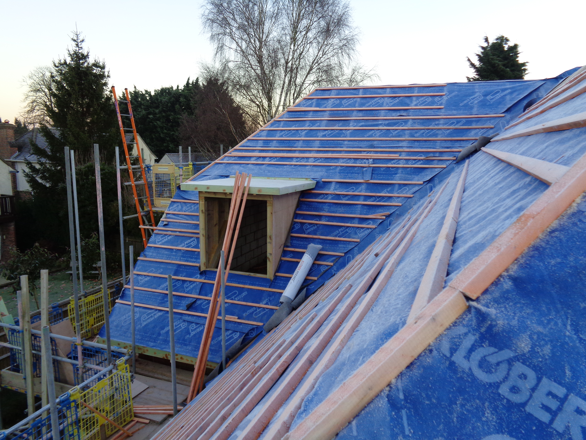

Carpentry
Tailored joinery, fitted interiors, and bespoke finishes that bring function and character to a space.
Kitchens
Practical, well-designed kitchen schemes that balance storage, workflow, and the finish you want to live with every day.
